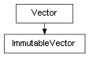

class cymel.core.datatypes.vector.ImmutableVector¶

- class cymel.core.datatypes.vector.ImmutableVector(*args)¶
Bases:
Vectorimmutablewrapper forVector.Methods:
cartesianize(*args, **kwargs)Convert homogeneous coordinates to Cartesian coordinates (W=1).
homogenize(*args, **kwargs)Convert rational form coordinates to homogeneous coordinates.
iabs(*args, **kwargs)Set each element of a 4-dimensional vector to an absolute value.
iadd(*args, **kwargs)Sets the sum of 4-dimensional vectors.
idiv(*args, **kwargs)Sets the quotient of a 4-dimensional vector.
imul(*args, **kwargs)Sets the product of 4-dimensional vectors.
ineg(*args, **kwargs)Sets the sign inversion of a 4-dimensional vector.
isub(*args, **kwargs)Sets the sum of 4-dimensional vectors.
normalize(*args, **kwargs)Set the normalized 3D vector.
normalizeIt(*args, **kwargs)Set the normalized 3D vector.
orthogonalize(*args, **kwargs)Sets a vector that is orthogonal to the specified vector.
rationalize(*args, **kwargs)Convert homogeneous coordinates to advantageous form.
set(*args, **kwargs)Set other values.
Method Details:
- cartesianize(*args, **kwargs)¶
Convert homogeneous coordinates to Cartesian coordinates (W=1).
(W*x, W*y, W*z, W) is converted to (x, y, z, 1).
- Return type:
Vector(self)
- homogenize(*args, **kwargs)¶
Convert rational form coordinates to homogeneous coordinates.
(x, y, z, W) is converted to (W*x, W*y, W*z, W).
- Return type:
Vector(self)
- iabs(*args, **kwargs)¶
Set each element of a 4-dimensional vector to an absolute value.
- Return type:
Vector(self)
- iadd(*args, **kwargs)¶
Sets the sum of 4-dimensional vectors.
- idiv(*args, **kwargs)¶
Sets the quotient of a 4-dimensional vector.
- imul(*args, **kwargs)¶
Sets the product of 4-dimensional vectors.
- isub(*args, **kwargs)¶
Sets the sum of 4-dimensional vectors.
- orthogonalize(*args, **kwargs)¶
Sets a vector that is orthogonal to the specified vector.